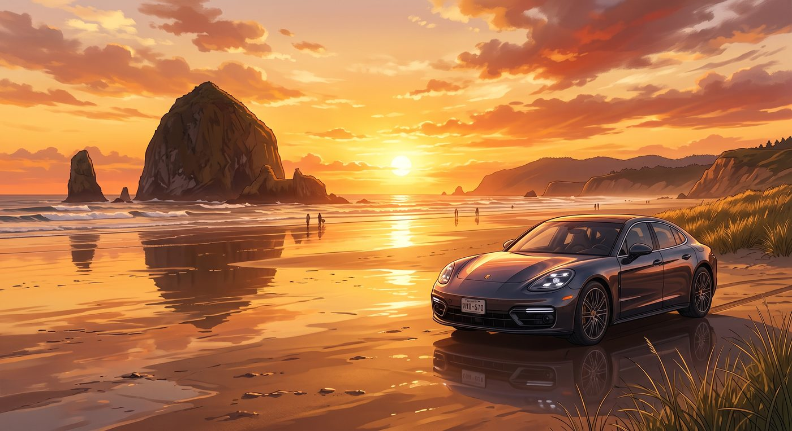

飛盤驚魂

加農海灘的落日把整片潮間帶染成了蜂蜜般的金紅色。
太平洋的海風夾雜著鹹澀的水汽吹拂而過，退潮後的硬沙灘平整得像一面巨大的反光鏡。遠處，那輛剛在 101 號國道上狂飆過的深灰色保時捷 Panamera 靜靜停在靠近沙丘邊緣的平坦地帶，車漆在夕陽下泛著冷冽而昂貴的光澤。
Victoria 正坐在沙灘折疊椅上，戴著墨鏡，腳下墊著高級防潮野餐墊，手裡捧著一杯加了檸檬片的氣泡水，極力維持著與這片原生態沙灘格格不入的名媛優雅。
「聽著，小修女，扔飛盤的精髓在於——不要用妳向上帝祈禱的那種溫柔手勁，要用手腕的爆發力！」
十米開外的沙灘上，Chloe 已經脫掉了工裝靴，赤著腳踩在濕漉漉的沙子裡，手裡轉著一個亮粉色的塑膠飛盤。她把一頭藍髮胡亂扎在腦後，嘴裡嚼著薄荷糖，擺出一個極其誇張的投擲姿勢。
站在她對面的 Kate 穿著一件米白色的柔軟毛衣，雙手規規矩矩地垂在身側，神情緊張得像是在等待主日學的突擊抽查。
「手腕平放……拇指在上，四指扣在邊緣……」Kate 小聲重複著 Chloe 剛才的教學口訣，小心翼翼地從 Chloe 手裡接過飛盤，指尖微微有些僵硬，「像這樣嗎，Chloe？但風好像有點大，我怕控制不好方向。」
「別管風向！朝著我看，想像我是那個在課堂上給妳留了一堆家庭作業的代數老師！」Chloe 倒退著向後小跑了幾步，張開雙臂大喊，「來吧，Kate！釋放妳內心壓抑的朋克之魂！用力甩過來！」
幾步之外，Max 正端著相機半跪在沙灘上，鏡頭在 Kate 認真的側臉與 Chloe 張牙舞爪的身影之間切換，嘴角掛著忍不住的笑意。
「好的……那我試試看！」
Kate 深吸了一口氣，神情莊重得宛如要將十字架拋向大海。她側過身，笨拙地向後引臂，隨後緊閉雙眼，用盡全身力氣猛地將手臂甩了出去——
然而，手腕在最後一刻劇烈內扣，塑膠飛盤完全沒有按照預期的拋物線飛向 Chloe，而是在離手的瞬間發出一聲尖銳的破空聲，借著太平洋強勁的側向陣風，以一種近乎九十度的詭異直角，帶著瘋狂旋轉的殘影，筆直地朝著沙丘方向呼嘯而去！
而那個方向的正中央，停著 Victoria 那輛價值六位數的保時捷 Panamera。
精準無比，直奔駕駛座側面的後視鏡與一體式碳纖維側裙。
「噢！天哪！不！」Kate 猛地睜開眼，看清飛盤的軌跡後，嚇得倒吸一口涼氣，雙手死死捂住了嘴巴，整個人僵在原地。
「靠——！方向完全反了啊？！」Chloe 的眼睛瞬間瞪大，拔腿就朝著飛盤的方向狂奔，試圖用肉身去攔截那枚粉色飛行器，嘴裡爆發出一聲驚恐的咆哮，「蔡斯！趴下！防空警報！！」
坐在折疊椅上的 Victoria 原本正優雅地端起水杯，聽到動靜的一瞬間抬頭，墨鏡後的瞳孔驟然緊縮。
她看見一個亮粉色的不明物體在空中劃出一道致命弧線，正以時速至少四十英里的速度朝著自己愛車的擋風玻璃砸過來。
「你們這群——野蠻人！！」Victoria 顧不上名媛包袱，整個人從椅子上彈了起來，尖叫聲穿透了整個海灘。
就在那枚粉色飛盤距離 Panamera 鋥亮的金屬車門僅剩不到三十厘米、即將製造出一筆昂貴的車漆維修單的千鈞一髮之際——
空氣中傳來一聲細微的快門輕響。
沙灘上的微風驟然停滯了半秒。
當時間重新流動時，Max 已經不知何時狂奔到了車身側面，伸出雙手，在半空中狼狽卻精準地一把將那枚高速旋轉的塑膠飛盤死死抱進了懷裡。
由於慣性，Max 整個人撲倒在柔軟的沙堆上，在保時捷輪胎邊滑出了一道淺坑，濺起一小片細沙。
整個海灘陷入了長達三秒鐘的死寂。
只有海浪拍打礁石的嘩嘩聲。
「……安全上壘。」Max 趴在沙子裡，緩緩舉起手裡完好無損的粉色飛盤，吐掉嘴邊沾著的一粒細沙，對著呆滯的眾人比了一個微弱的剪刀手。
「呼……」Chloe 猛地剎住腳步，雙手撐著膝蓋大口喘粗氣，抬手抹了一把額頭上的冷汗，「上帝保佑，老娘的修車庫差點就真的要賠給這台德國鐵皮了。」
Kate 這時才提著裙角慌慌張張地小跑過來，眼眶泛紅，滿臉通紅地對著 Victoria 連連鞠躬：「對不起！對不起 Victoria！我真的不是故意的……我的手滑了一下……」
Victoria 站在原地，胸口劇烈起伏，臉色從蒼白轉為鐵青，又慢慢變成了無奈的潮紅。她低頭看了看安然無恙的愛車，又看了看滿身是沙、趴在地上的 Max，以及快要急哭的 Kate。
她深深吸了一口氣，伸手摘下墨鏡，狠狠掐了掐自己的鼻樑。
「Price，」Victoria 的聲音帶著咬牙切齒的隱忍，「從現在開始，如果那個廉價的粉色塑膠片再出現在距離我的車半英里以內的範圍，我就會把它融化了做成妳皮卡的雨刷器。」
隨後，她轉向手足無措的 Kate，語氣雖然依舊生硬，卻悄悄放軟了幾分：「還有妳，Marsh。發力點是手臂橫擺，不是像扔手榴彈一樣往後掄。還有，別再鞠躬了，沙子都蹭到妳的毛衣上了。」
「噗……」趴在沙灘上的 Max 忍不住笑出了聲。
「笑什麼笑，考菲爾德！起來，擦乾淨妳臉上的泥巴！」Victoria 狠狠瞪了 Max 一眼，卻順手從手袋裡抽出一包濕紙巾扔到了 Max 的懷裡。
Chloe 已經完全從驚嚇中恢復了過來，大笑著一把將地上的 Max 拽了起來，順勢攬住 Kate 的肩膀：「聽到了嗎 Kate？蔡斯小姐剛才親自指導妳了！走，我們去離車五百米遠的海浪邊，這次老娘教妳怎麼扔出一個完美的下墜球！」
「不要再教她奇怪的動作了，Chloe！」Max 一邊擦著臉頰上的沙子，一邊無奈地笑著跟了上去。
夕陽最後的光暈沉入太平洋地平線，海風捲起四個人的衣角與笑罵聲，在空曠壯麗的沙灘上久久回盪。